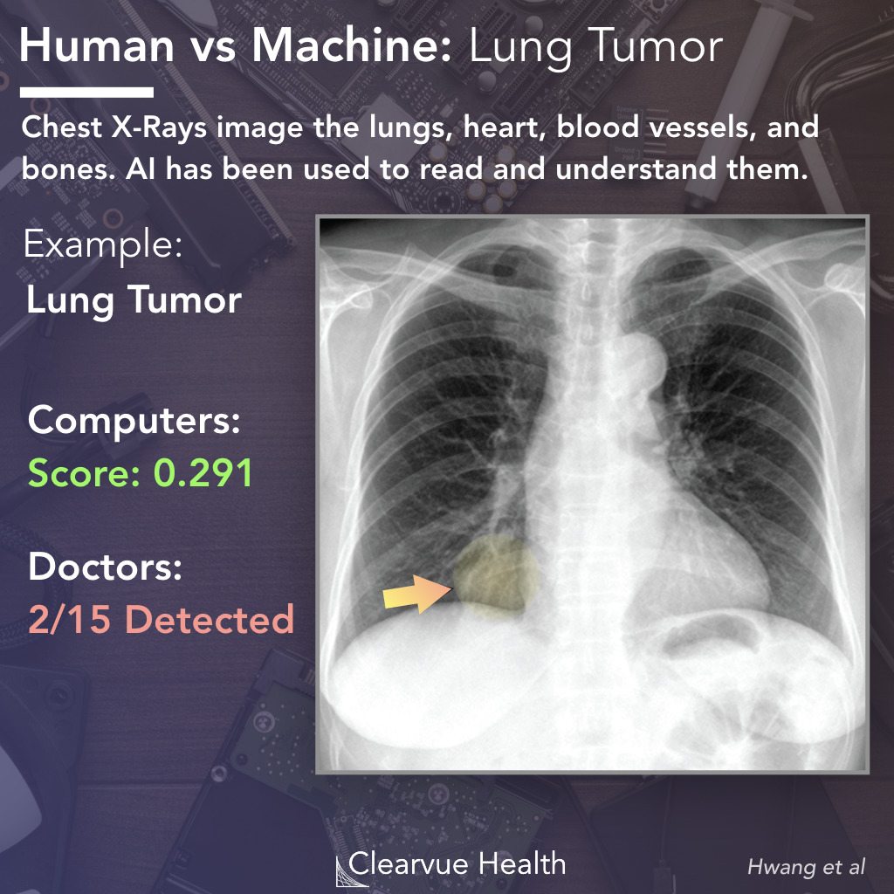
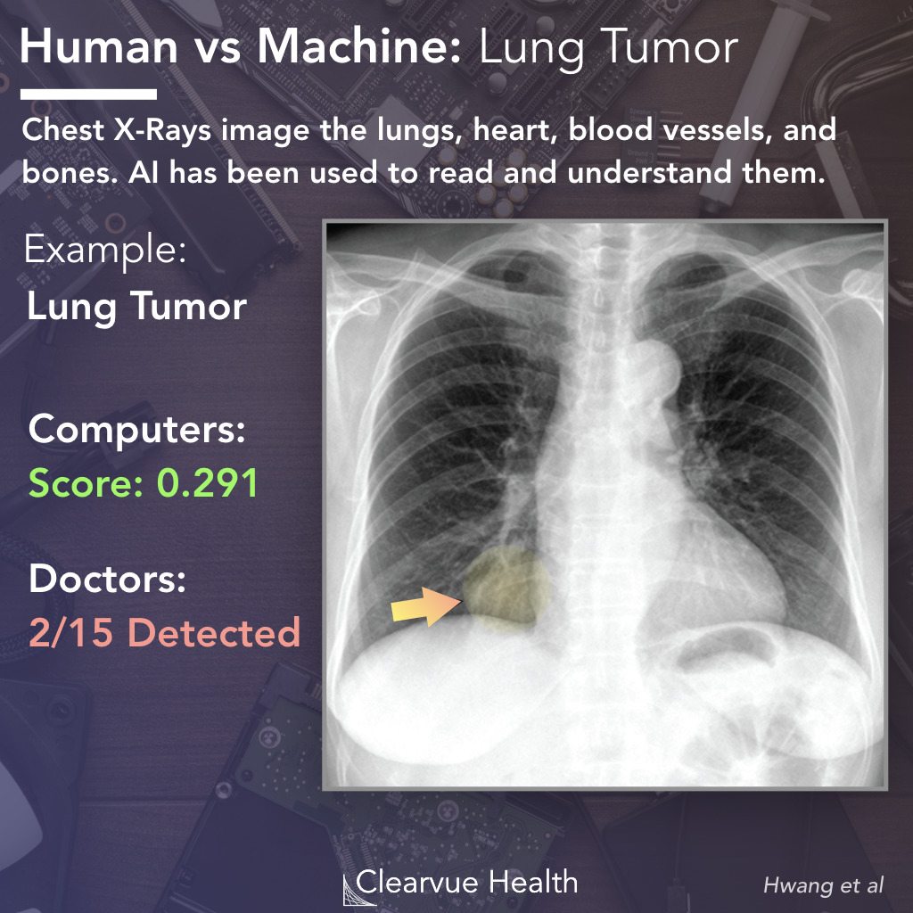

Inteligência Artificial e Aplicações
ao Diagnóstico e Tratamento do Câncer
Abordagens de biologia de sistema para medicina translacional
Danilo S. Carvalho, PhD 1, 2
- Centro de Desenvolvimento Tecnológico em Saúde (CDTS) - FIOCRUZ
- Departamento de Ciência da Computação - UFRJ
Conteúdo
- Computadores & Inteligência Artificial
- Princípios de funcionamento
- Desafios na medicina diagnóstica
- Desafios na aplicação de IA ao tratamento de pacientes
- Sistemas preditivos e Aprendizado de Máquina
- Ferramentas e conjuntos de dados
- Visualização
Computadores

Computadores
Se a GM tivesse acompanhado a tecnologia da mesma forma que a indústria de computadores, estariamos todos dirigindo carros de 25 dólares que percorrem 300 Km por litro.
Inteligência Artificial: O que queremos
- Autonomia de decisão: resolver tarefas sem intervenção humana
- Versatilidade: utilização em diversas atividades
- Outros interesses: comunicação, consciência
- Problemas: desemprego, responsabilidade da máquina
Inteligência Artificial: O que temos
- Autonomia limitada: necessário “treinamento” para cada tarefa
- Versatilidade: utilização em tipos específicos de tarefas
- Reconhecimento facial
- Transcrição de voz, comandos via linguagem natural
Autonomia (limitada aos dados)
- Sistemas atuais são capazes de “aprender” padrões de variada complexidade
- Padrões são armazenados como parâmetros de funções matemáticas ou lógicas
- Precisam ser ajustados de acordo com os dados
A lacuna semântica
Indo um pouco além dos dados...
- Interesse na informação implícita.
- Aproximar a representação da informação nos computadores daquela que pode ser interpretada por humanos.
- Precisamos também entender o que nossas criações estão aprendendo...
Inteligência Artificial: Tipos
-
IA forte: máquina toma decisões autonomamente.
- Consciência
- Território da ficção
-
IA fraca: computador registra padrões em dados na forma de funções matemáticas/lógicas.
- Aprendizado de Máquina
- Realidade hoje
IA: Princípios de funcionamento
- Abstração do mundo real.
-
Função objetivo.
- Função de perda: punição ao erro.
- Treinamento: observação -> tentativa e erro -> aproximação.
- Validação / Teste: reprodução do comportamento esperado.
- Refinamento e Interpretabilidade.
Aprendendo como uma IA
IA: Propósitos
- Automação de sistemas complexos.
- Reconhecimento de padrões.
- Explicação de sistemas complexos.
IA: Ramos
- Computação Cognitiva
- Capturar e utilizar o contexto em torno de um problema para produzir inferências, imitando o processo de raciocínio humano.
- Aprendizado de Máquina
- Capacidade de aprender com os dados sem ser explicitamente programado. Imita o processo de aprendizado.
- Deep Learning
- Um dos tipos de Aprendizado de Máquina. Realiza o aprendizado usando uma técnica conhecida como Redes Neurais Artificiais, que imitam (superficialmente) o funcionamento do cérebro humano.
- Visão Computacional
- Técnicas para análise de dados visuais: fotos, vídeos, radiografia, MRI, entre outros. Identificação de padrões e interpretação das imagens.
- Processamento de Linguagem Natural
- Técnicas para análise de dados textuais e linguagem humana: texto (documentos, livros, redes sociais, ...), fala, sinais, entre outros. Identificação de padrões, representação e interpretação da linguagem.
Desafios à Medicina diagnóstica
Dados clínicos podem possuir naturezas físicas e conceituais bastante distintas.
Dados clínicos podem possuir naturezas físicas e conceituais bastante distintas.
Dados clínicos podem possuir naturezas físicas e conceituais bastante distintas.
Dados clínicos podem possuir naturezas físicas e conceituais bastante distintas.
Dados clínicos podem possuir naturezas físicas e conceituais bastante distintas.
Um médico analisa resultados de exames baseado em treinamento abrangente e especializado a respeito das causas e consequências de determinados disturbios, e em experiência pessoal com pacientes.
Uma IA apenas determina as opções mais prováveis de diagnóstico dentro de um conjunto limitado de possibilidades em que foi treinada, baseada apenas nos dados de clínicos aos quais foi apresentada.
Essa simplicidade traz uma vasta gama de usos, nas mais diversas especialidades médicas, mas também limita a qualidade e abrangência dos resultados.
Com um potencial mercado bilionário à espera, não faltam empresas, grandes ou pequenas, tentando emplacar um produto que consiga cativar o interesse de médicos e laboratórios. Exemplos incluem:
 


Desafios à Medicina diagnóstica: Sistemas
O IBM Watson sugere roteiros de tratamento para os médicos, baseado nos dados clínicos dos pacientes e está sendo expandido para também utilizar dados genéticos.
Desafios à Medicina diagnóstica: Sistemas
Centros médicos nos Estados Unidos e em Israel estão desenvolvendo sistemas para microscópios e outros equipamentos de diagnóstico por imagem, que reconhecem automaticamente e rapidamente padrões de doenças e alertam os técnicos responsáveis para realização de análise detalhada.
Aprendizado de máquina: demonstração
Veremos agora uma breve demonstração do uso de aprendizado de máquina em um conjunto de dados público.
Desafios ao tratamento de pacientes
Representação do mundo: o computador possui acesso limitado às informações sobre o paciente.
O médico torna-se então o elo frágil que conecta os pacientes aos sistemas envolvendo IA.
Várias abordagens buscam reduzir essa fragilidade, sem sobrecarregar os profissionais de saúde com a entrada e uso de informações.
Essa interação crescente entre os profissionais de saúde e os sistemas de informação automatizados também traz requisitos crescentes de interpretabilidade.
Informações erradas ou incompletas geradas por tais sistemas podem causar grandes danos.
Por essa razão, os profissionais envolvidos devem estar cientes dos critérios que foram usados em uma informação gerada via IA, tal como uma sugestão de tratamento ou diagnóstico.
Responsabilidades relativas aos profissionais, sistemas e instituições estão sendo estabelecidos pouco a pouco em arcabouços legais, principalmente nos países desenvolvidos.

Aprendizado de máquina: tipos de tarefa
- Classificação
- Trata da categorização de observações em classes previamente definidas, através de padrões comuns às observações. Ex: a classificação de pacientes conforme diagnóstico ou grupo de risco, baseado nos dados clínicos, ou a identificação de pessoas com base em suas características faciais.
- Regressão
- Trata da previsão de valores de um fenômeno quantificável, considerando valores conhecidos e variáveis auxiliares. Ex: Prever a dose necessária de um medicamento baseado nos dados clínicos e resposta terapêutica ao longo do tempo para cada paciente, ou prever o valor de certas ações na bolsa de valores no próximo minuto, baseado nos valores anteriores e em indicadores do mercado.
- Clustering (Agrupamento)
- Trata da categorização de observações em grupos não definidos previamente, conforme a similaridade observada dos elementos em diversas características. Ex: Agrupamente de compostos químicos de acordo com características farmacocinéticas, ou agrupamento de usuários de um sistema (e.g., Netflix) conforme suas preferências individuais.